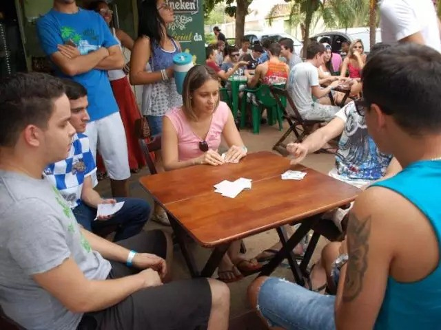

Regulamento Campeonato Goiano truco 2019
Mantendo uma tradição desde de 1982, ao longo desse tempo,
a FGT nunca deixou de promover o Campeonato Goiano de Truco,
a maior competição da modalidade dentro do Estado, portanto,
a partir de 08 de Julho 2019, terá início a competição, com a
participação de 6 (Seis) equipes de várias regiões de Goiás.

O objetivo do presente regulamento é coordenar, administrar e organizar as normas
a serem adotadas no campeonato. Para lograrmos êxito e sucesso a FGT
conta com o apoio dos Senhores Presidentes de Equipes, sem os quais,
jamais alcançaremos nossos objetivos, pois são considerados líderes
dentro de uma partida, são fiscais quando seu time é mandante de uma partida.
São pessoas ponderadas e equilibradas por isso devem ter conhecimento profundo do
Regulamento das Regras e Disciplina, e a parte disciplinar do campeonato muito
depende dos senhores.
Para mais detalhes sobre os times, escolha um de sua preferência.
Regulamento Campeonato Goiano truco 2019
Para mais detalhes sobre os times, escolha um de sua preferência.